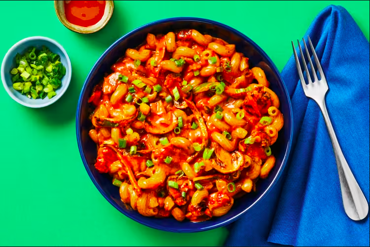

Vegan Cajun-Spiced Mushroom Cavatappi

One of my favorite comfort dishes. This creamy spiced pasta you're about
to make will warm you body and soul.
Ingredients
- 4 ounces of button mushrooms
- 1 long green pepper
- 4 cloves of garlic
- 2 scallions
- 6 ounces of cavatappi pasta
- 1 tablespoon flour
- 1 tbalespoon blackening spice
- 14 ounces of canned diced tomatoes
- 8 ounces of coconut milk
- 2 tablespoons of mushroom stock concentrate
- 1 tablespoon of veggie stock concentrate
- 1 tsp of hot sauce of your choosing
Steps
- Bring a large pot of salted water to a boil. Wash and dry
produce